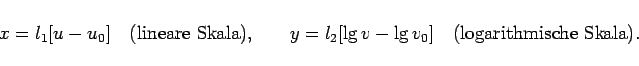
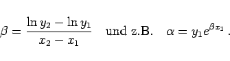

Inhalt Index DeskTop Bronstein

 Funktionen und ihre Darstellung Skalen und Funktionspapiere Funktionspapiere
Funktionen und ihre Darstellung Skalen und Funktionspapiere Funktionspapiere


Ist die x-Achse gleichabständig unterteilt, die y-Achse jedoch logarithmisch, dann spricht man vom einfach-logarithmischen Funktionspapier oder vom einfach-logarithmischen Koordinatensystem.
|  | (2.259) |
Die folgende Abbildung zeigt ein Beispiel für einfach-logarithmisches Papier.
als Geraden dargestellt (s. Rektifizierung). Diese Eigenschaft wird wie folgt ausgenutzt: Liegen Meßpunkte, wenn sie in einfach-logarithmischem Papier eingetragen worden sind, annähernd auf einer Geraden, dann kann zwischen den Variablen ein Zusammenhang der Form (2.260) angenommen werden. Mit Hilfe dieser Geraden, die nach Augenmaß durch die Meßpunkte gelegt wird, kann man Näherungswerte für die Parameter  und
und  bestimmen:
bestimmen:
Liest man zwei Punkte P1(x1,y1) und P2(x2,y2) auf dieser Geraden ab, dann erhält man
|  | (2.261) |